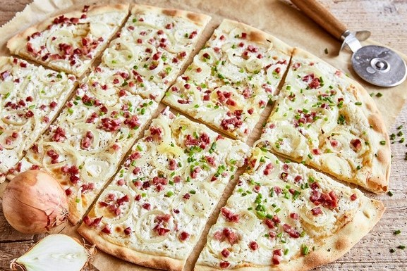

Das Rezept ist für ein Blech.
Elsässer: 1 Stück = ca. 455 kcal. 4 Stück = ca. 1.820 kcal (Portion pro Person).
Fertigteig: 1 Stück = ca. 190 kcal. 4 Stück = ca. 760 kcal (Portion pro Person).
_______________________________________________________________